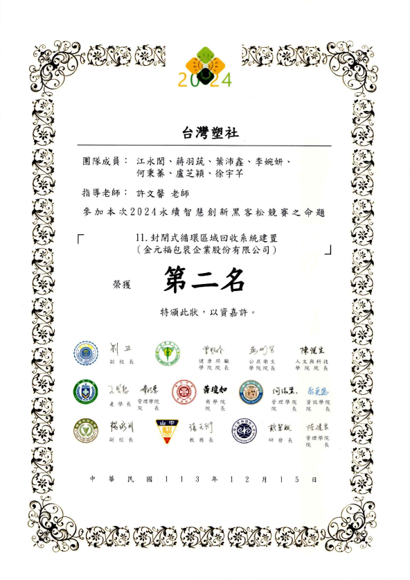

榮譽獎項
11th ICBDA 國際研討會
“A Scalable Multimodal Big Data Framework for Transformer-Based Emotion Recognition and Mental Health Analytic”
永續智慧創新黑客松競賽
專案：「康博AI健康管家」智慧診所互動體驗設計計畫
負責：系統介面設計與 Demo
全國大專校院智慧創新暨跨域整合創作競賽
項目：體感互動科技
負責：專案開發
第五屆尋找資安女捷思
項目：創意發想賽
負責：劇本發想、影片剪輯、報告
中國科技大學資訊科技應用國際學術研討會
基於深度學習之即時情緒辨識系統於高壓職業環境的應用與評估
中山醫學大學全國智慧醫療暨永續發展創意競賽
項目：智慧醫療組
負責：專案開發
第二屆中山醫學大學資料視覺化創意競賽
項目：體感互動科技
負責：資料查找與清洗
永續智慧創新黑客松競賽
項目：封閉式循環區域回收系統建置
負責：創意構想、文書處理
永續智慧創新黑客松競賽
項目：正確偏頭痛的就醫與用藥攻略
負責：上台發表
中山醫學大學第九屆「全國大專院校創新、創意及創業競賽」
項目：創新科技組
負責：專案開發
競賽專案展示
A Scalable Multimodal Big Data Framework for Transformer-Based Emotion Recognition and Mental Health Analytic
建立基於 Transformer 的多模態情緒辨識框架，整合臉部、語音、文字與生理訊號 (ECG、GSR)五種模態。
康博AI健康管家
2025永續智慧創新黑客松競賽項目之一，提出一套結合AI與穿戴式裝置的智慧系統。
數位醫療的防線：運用區塊鏈技術保護醫療隱私
「霍格華資」團隊參加2025 GiCS尋找資安女婕思，且運用以太坊證明服務 (EAS) 打造去中心化醫療隱私防線。
基於深度學習之即時情緒辨識系統於高壓職業環境的應用與評估
發表於 2025 資訊科技應用國際學術研討會，探討深度學習於高壓職業環境之情緒偵測。
私立醫學大學知識轉譯評估
參加第二屆中山醫學大學資料視覺化創意競賽，利用大數據分析私立醫學大學之產學合作能量與招生吸引力之關聯性研究。
私立醫學大學知識轉譯與教育吸引力之評估：產學能量與招生吸引力之對話
專案核心
在少子化與高等教育競爭激烈的背景下，本研究聚焦於私立醫學大學如何透過強化產學合作與研發表現，來維持穩定的招生吸引力。
透過整合 106 年至 112 年之校務公開資料，釐清研發能量與招生指標之間的互動機制。
分析維度
- 產學研發指標： 分析專利申請件數、新品種授權數、以及產學合作計畫之平均經費。
- 教育吸引力指標： 追蹤歷年新生註冊率、在學學生人數及專任師資變動趨勢。
- 跨校整合比對： 針對北醫、中醫大、高醫、慈濟、中山醫等多所醫學大學進行數據標準化評比。
技術流程
- 資料清洗： 處理大專校院校務資訊公開平台之原始數據，包含名稱簡化、學籍編訂與異常值過濾。
- 關聯性建模： 建立產學合作經費與新生入學意願之間的統計關聯。
- 數據可視化： 利用直觀圖表（如男女人數比、專利件數趨勢）呈現複雜的教育體系數據。

獲勝獎狀
點擊圖片可直接展開/縮小

dashboard介面展示
點擊圖片可直接展開/縮小
借塑一宿_封閉式循環回收系統
「台灣塑社」團隊參加2024年黑客松競賽，
結合 AI 辨識與超商通路的智慧回收平台，旨在解決廢塑膠回收率低與環保意識不足之痛點。
借塑一宿：封閉式循環區域回收系統建置
計畫目標與困境
目前台灣廢塑膠回收率不到三成 ，多數民眾環保意識不足且回收管道便捷性有限。 本團隊提出「借塑一宿」方案，以超商為核心據點，建立封閉式循環系統，最大化塑膠再利用價值。
三大核心模組
- 回收獎勵機制： 利用超商高密集度特點，民眾回收具企業 LOGO 之塑膠可獲得獎金與環保點數，提升回收意願。
- 智慧塑膠循環： 利用 AI 辨識回收標誌進行分類，將塑膠再製成食品包裝或台灣特色造型悠遊卡（如藍白拖、紅色塑膠椅）。
- 互動教育 APP： 整合環保問答小遊戲、電子寵物餵養與點數兌換功能，強化民眾環保意識與參與感。
預期社會效益
- 環境友善： 透過熱解作用 (pyrolysis) 將無法再製的塑膠轉化為新能源，降低碳排放。
- 企業責任： 協助企業計算產品回收率，強化綠色形象並落實 ESG 貢獻。

智慧回收 APP 主頁面
點擊圖片可直接展開/縮小

獲獎證明
點擊圖片可直接展開/縮小
青青眼護你 Glaucosence
參加校內舉辦的創新、創意及創業競賽。結合 AI 偵測的青光眼護理系統，協助提升治療準確率並輔助醫師診斷。
課堂專案展示
AI 初步問診系統
基於 Node-RED 開發的醫療輔助平台，整合大型語言模型實現引導式問診與科別推薦。
進貨管理系統
Microsoft SQL Server資料庫加上機器學習，具備 CRUD 核心功能與熱門進貨預測分析。
互動式醫療電子商務：從資料庫建置到網站架設
基於 XAMPP 環境開發的簡易系統，從資料庫建立到模擬維基百科網站的架設。